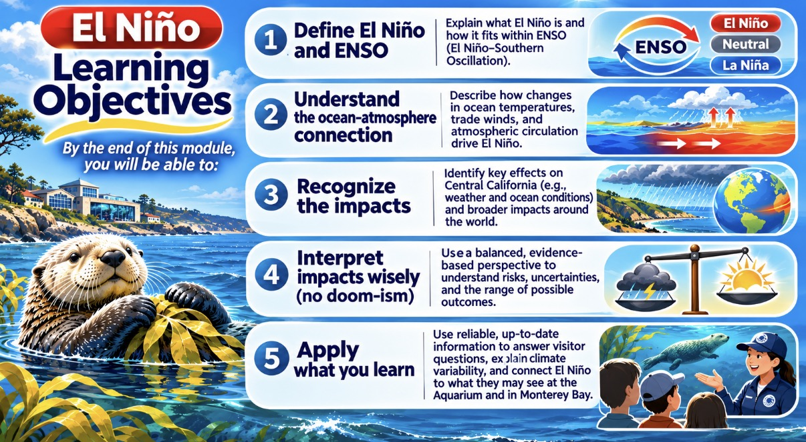
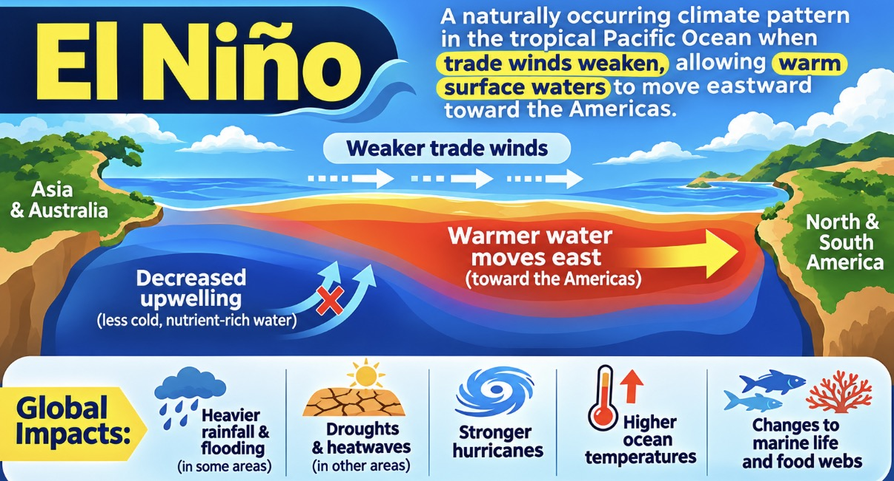
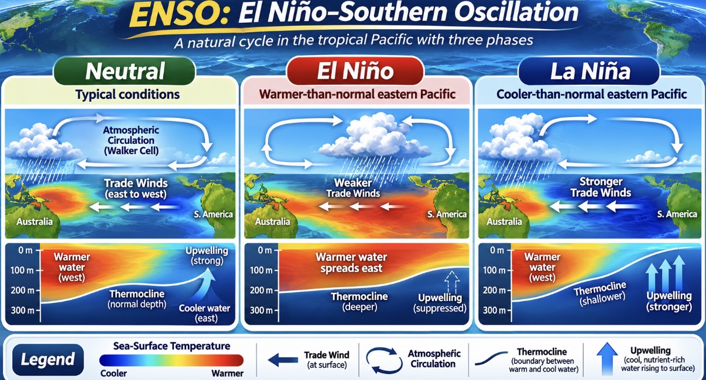
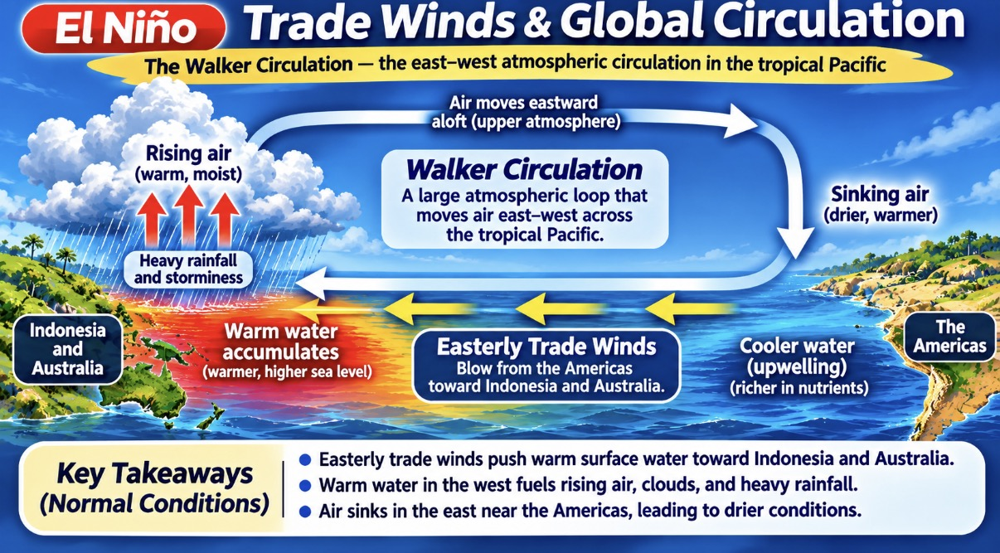
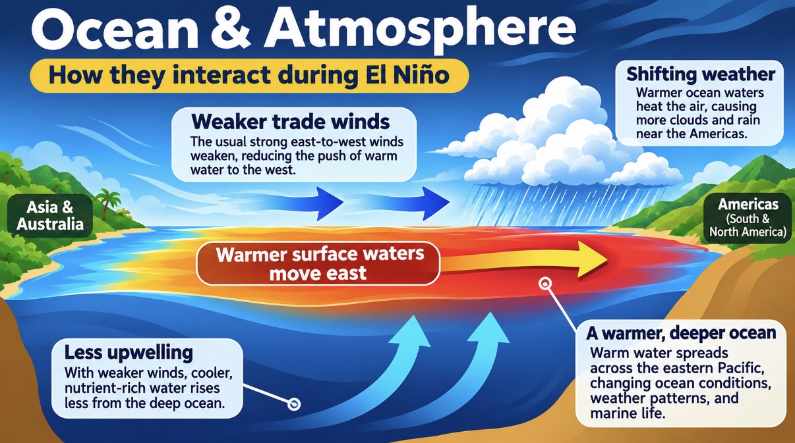
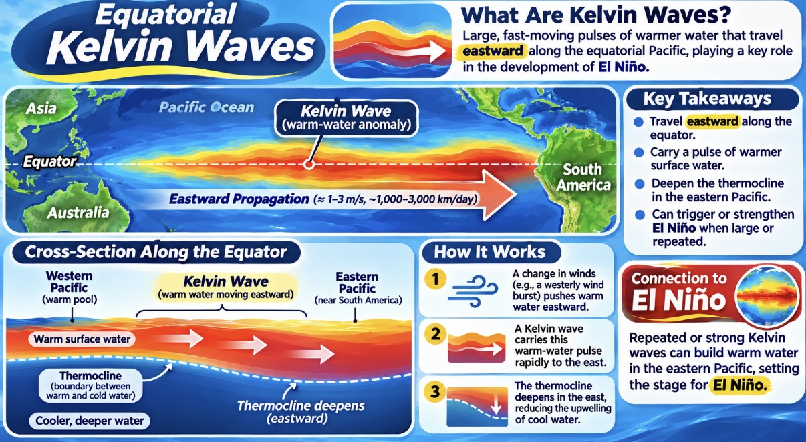
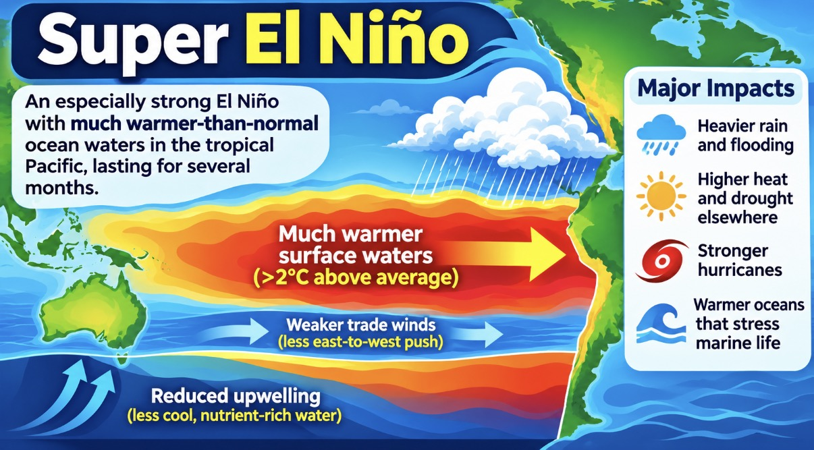
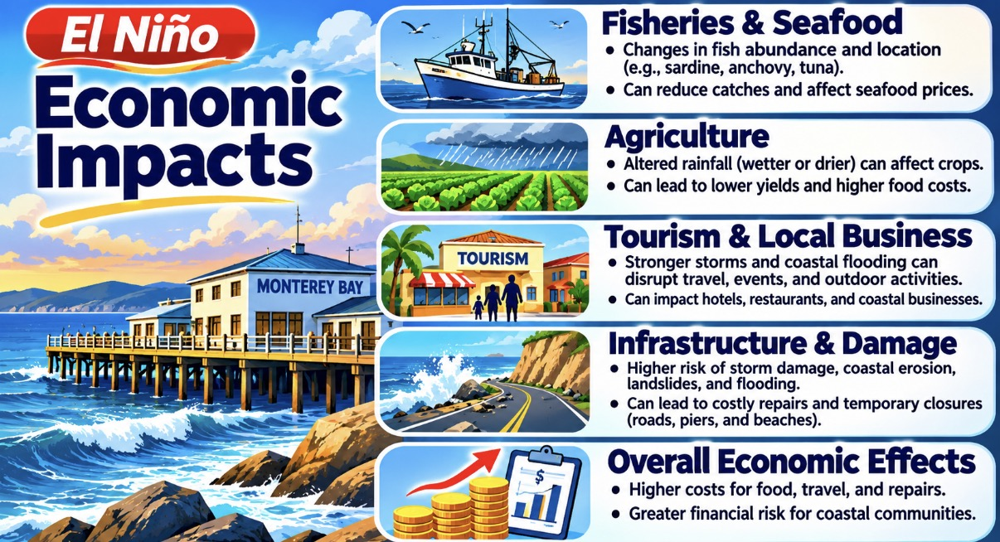
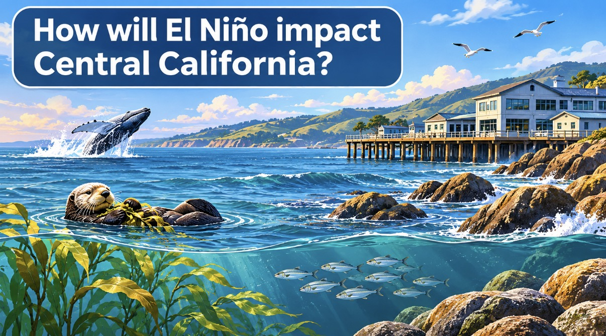
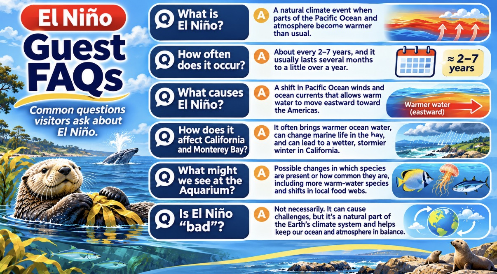

Understanding El Niño
1Learning Objectives⌄
- Define El Niño and ENSO
- Understand the ocean–atmosphere connection
- Recognize the impacts
- Interpret impacts wisely
- Apply what you learn

Illustration 1 · awaiting upload
2El Niño Basics⌄
- A naturally occurring climate pattern in the tropical Pacific Ocean
- Trade winds weaken, allowing warm surface waters to move eastward toward the Americas
- Ocean waters get warmer; weather patterns change; ocean life and marine ecosystems are affected

Illustration 2 · awaiting upload
3ENSO: Three Phases⌄
- Neutral: typical Pacific conditions
- El Niño: warmer-than-normal eastern Pacific
- La Niña: cooler-than-normal eastern Pacific

Illustration 3 · awaiting upload
4ENSO Explained⌄
- ENSO is a recurring climate pattern involving shifts in tropical Pacific ocean temperatures, winds, and weather
- El Niño, Neutral, and La Niña are the three phases

Illustration 4 · awaiting upload
5Trade Winds & Global Circulation⌄
- The Walker Circulation is an east–west atmospheric circulation in the tropical Pacific
- Easterly trade winds normally push warm surface water toward Indonesia and Australia
- Warm water in the west fuels rising air, clouds, and heavy rainfall; air sinks in the east near the Americas

Illustration 5 · awaiting upload
6Ocean & Atmosphere⌄
- During El Niño, weaker trade winds reduce the push of warm water toward the west
- Warmer surface waters move east
- Reduced upwelling brings fewer nutrient-rich waters toward the surface in the eastern Pacific

Illustration 6 · awaiting upload
7Equatorial Kelvin Waves⌄
- Kelvin waves move warm-water anomalies eastward along the equatorial Pacific
- Changes in wind can initiate waves that travel across the ocean
- Kelvin waves help spread warm water and deepen the thermocline in the eastern Pacific

Illustration 7 · awaiting upload
8Super El Niño⌄
- An especially strong El Niño with much warmer-than-normal tropical Pacific waters
- Possible impacts include heavier rain and flooding, higher heat and drought elsewhere, stronger hurricanes, and warmer coastal waters stressing marine life

Illustration 8 · awaiting upload
Local and Global Impacts
9Monterey Bay Impacts⌄
- Warmer waters and marine heatwaves
- Changes in which species we see, including tropical visitors
- Stress on kelp forests and food webs
- Possible impacts on fisheries and seabirds

Illustration 9 · awaiting upload
10Marine Impacts⌄
- Warmer ocean temperatures
- Reduced nutrient upwelling
- Changes in fisheries and species distributions
- Coral reefs under stress
- Wider effects across marine ecosystems

Illustration 10 · awaiting upload
11Coastal Impacts⌄
- Larger swells and stronger waves
- Increased beach erosion
- Coastal flooding from higher sea levels
- More coastal storms and heavy rain
- Impacts on coastal habitats and wildlife

Illustration 11 · awaiting upload
12Economic Impacts⌄
- Fisheries and seafood: changes in fish abundance, location, and catch
- Agriculture: altered rainfall, flooding, or drought
- Tourism and local businesses: disruption from storms and coastal flooding
- Infrastructure: storm damage and repair costs
- Overall economic effects on coastal communities

Illustration 12 · awaiting upload
13Impacts at MBA⌄
- Warmer water can change Monterey Bay temperatures
- Some marine species become more common while others shift or become less common
- Kelp forests can experience stress
- Changes at the base of the food web can affect other marine life
- Notice changes in exhibits, sightings, and local conditions

Illustration 13 · awaiting upload
14How Will El Niño Impact Central California?⌄
- Central California impacts can include changing coastal conditions, ocean temperatures, waves, and marine life
- Use the accompanying illustration for discussion rather than treating any single outcome as certain

Illustration 14 · awaiting upload
Visitor Conversations
15El Niño Guest FAQs⌄
- What is El Niño? A natural climate event in the Pacific Ocean that shifts ocean temperatures and weather
- How often does it occur? About every 2–7 years, lasting several months
- What causes it? Weaker trade winds allow warm water to move eastward
- How does it affect California and Monterey Bay? It can change weather, ocean conditions, and marine life
- What might we see at the Aquarium? Changes in species and local ocean conditions
- Is El Niño 'bad'? It is a natural part of the climate system with both positive and negative effects

Illustration 15 · awaiting upload
16Combating Doom-ism⌄
- El Niño can bring challenges, but it is a natural part of Earth's climate system
- It is temporary
- It is a learning opportunity
- It can build resilience
- Positive actions: reduce waste, choose sustainable seafood, conserve water and energy, support ocean and climate science

Illustration 16 · awaiting upload
Quick Reference & Current Conditions
17El Niño Quick Facts⌄
- Ocean temperature anomalies can be elevated
- Sea level rise and rainfall can be important during strong events
- The slide includes time-sensitive forecasts and funding figures: review dates before using them as current facts

Illustration 17 · awaiting upload
18What Is Leading to 'Super El Niño'?⌄
- Long-lasting marine heatwave stretching across the East Pacific
- A heatwave in combination with El Niño can create a 'Super El Niño'
- Potential impacts: decreased upwelling, record-breaking land temperatures, disrupted marine food chains, thunderstorms, and more
- The source slide references April 2026 sea-surface temperature anomalies; treat it as dated context

Illustration 18 · awaiting upload